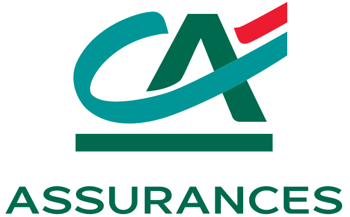
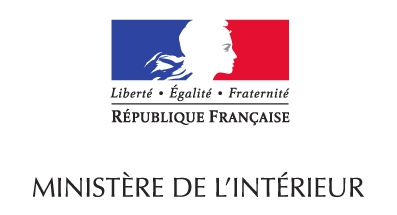
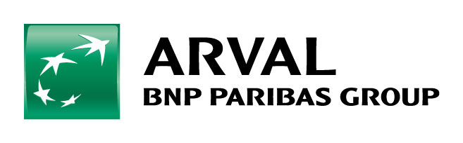

Analyse & produit
- Recueil et formalisation du besoin
- Spécifications fonctionnelles et techniques
- Parcours digitaux, UX et maquettage
- Backlog, User Stories, recette
Consultant IT - Freelance
IT Business Analyst au profil hybride, avec 6 ans d'expérience en développement et 4 ans en analyse fonctionnelle et pilotage produit. J'accompagne la conception de parcours digitaux ergonomiques et centrés sur l'utilisateur, en reliant les enjeux métier, l'expérience client et les contraintes techniques. Facilitateur des échanges entre les univers business et technique, je fais de la mise à disposition claire des connaissances et des règles un enjeu principal de mon métier. Convaincu qu'une bonne UX est un ingrédient indispensable de la satisfaction client, je me mets à la place de l'utilisateur final pour élaborer une interface propre et intuitive.


